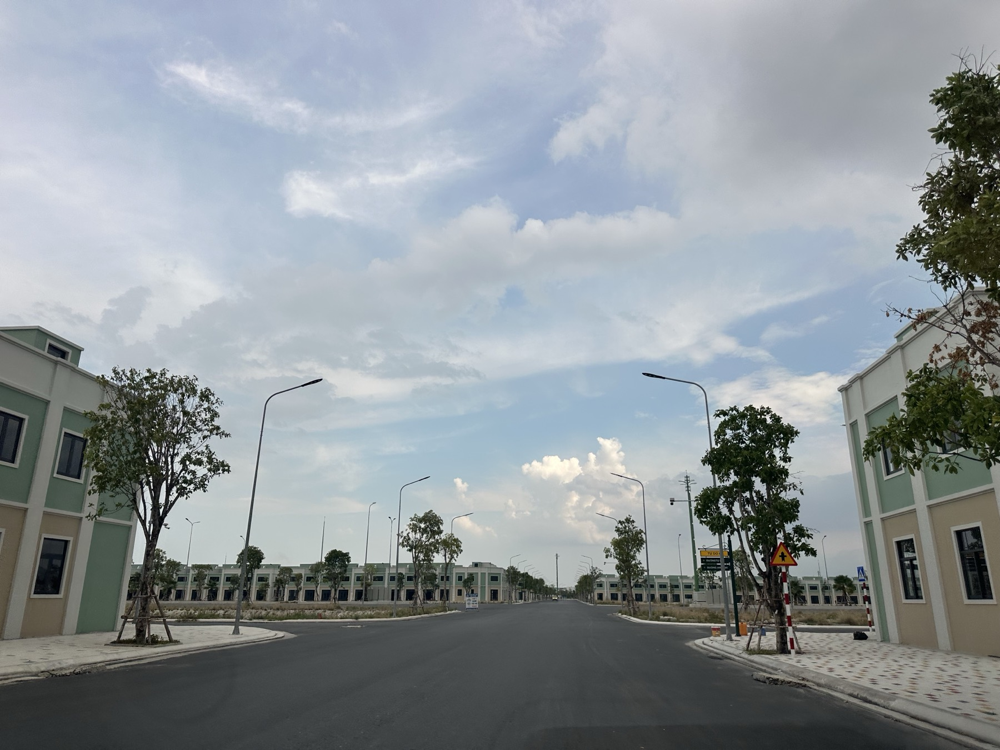

Thuế 0,2%/năm với đất bỏ hoang: người đang giữ đất trống chờ giá ở Khánh Hoà cần tính lại gì
Quốc hội khai mạc kỳ họp ngày 17/10 tới, trong đó có một dự thảo đáng để người đang cầm đất trống chú ý: mức thuế mới cho đất "bỏ hoang, chậm đưa vào sử dụng" — cao gấp bảy lần mức hiện hành. Đây mới là dự thảo, chưa thông qua. Nhưng dù có qua hay không, tôi nghĩ đây là dịp tốt để tự ngồi tính lại: giữ một lô đất trống thật ra đang tốn bao nhiêu mỗi năm.

Ảnh tư liệu. Một lô đất để trống chờ giá không bao giờ thật sự miễn phí — chỉ là chi phí đó không nằm trên hoá đơn.
Mức đề xuất: 0,2%/năm, không phân theo hạn mức
Bộ Tài chính đang gửi Bộ Tư pháp thẩm định dự thảo sửa đổi một số luật thuế, trong đó đề xuất mức thuế 0,2%/năm, không phân theo hạn mức, áp cho đất được xác định là "bỏ hoang, chậm đưa vào sử dụng". Để so sánh, thuế sử dụng đất phi nông nghiệp hiện hành đang là 0,03% trong hạn mức, 0,07% cho phần vượt không quá 3 lần hạn mức, và 0,15% cho phần vượt trên 3 lần hoặc đất sử dụng sai mục đích. Mức 0,2% đề xuất cao gần 7 lần mức 0,03% đang áp dụng phổ biến — và quan trọng hơn, nó không phân biệt hạn mức, nghĩa là áp một mức như nhau cho dù lô đất lớn hay nhỏ, miễn bị xác định là bỏ hoang. Dự thảo cũng giữ nguyên mức 0,2% với đất lấn chiếm.
Nếu được thông qua tại kỳ họp khai mạc 17/10, dự kiến hiệu lực từ 1/1/2027.
"Bỏ hoang" được hiểu thế nào — đây là chỗ còn mơ hồ
Luật Đất đai 2024 hiện hành chưa có định nghĩa chính thức thế nào là đất "bỏ hoang" hay "chậm đưa vào sử dụng". Dự thảo Luật Đất đai sửa đổi có đề xuất bổ sung định nghĩa này, nhưng chưa có mốc thời gian thông qua cụ thể. Nói cách khác: mức thuế đã có con số, nhưng tiêu chí để xác định một lô đất có bị tính là "bỏ hoang" hay không thì vẫn đang chờ làm rõ.
Đây không phải lần đầu chủ trương này xuất hiện — Nghị quyết 21-NQ/TW của Trung ương đã từng nêu định hướng "thuế cao hơn với đất bỏ hoang, không đưa vào sử dụng" cùng với việc nghiên cứu điều tiết địa tô chênh lệch. Lần này là lần đầu chủ trương đó có một con số cụ thể để đưa ra bàn.
Bảng tự tính: giữ một lô đất trống thật ra tốn bao nhiêu một năm
Nhiều người chỉ tính "giữ đất chờ giá lên" bằng một phép trừ đơn giản: giá bán tương lai trừ giá mua. Nhưng giữ đất trống có ba khoản chi phí chạy ngầm mỗi năm, cộng dồn vào đúng phép tính đó. Dưới đây là bảng tạm tính trên mỗi 1 tỷ đồng giá trị đất, để anh chị tự nhân theo giá trị lô đất của mình:
| Khoản mục | Cách tính | Số tiền / năm (trên 1 tỷ) |
|---|---|---|
| Thuế đất bỏ hoang (nếu dự thảo được thông qua) | 0,2% × giá trị | ~2 triệu đồng |
| Chi phí cơ hội của vốn tự có | so với gửi tiết kiệm ~9%/năm (mức cao nhất đang có trên thị trường) | ~90 triệu đồng |
| Lãi vay, nếu đang vay để giữ đất | lãi vay phổ biến hiện ~13%/năm | ~130 triệu đồng |
Nhìn vào bảng này sẽ thấy một điều: khoản thuế mới — nếu có — chỉ chiếm một phần rất nhỏ so với chi phí cơ hội của vốn, đặc biệt nếu đang vay để giữ đất. Nhưng điểm khác biệt là thuế là khoản cố định, trả đều, không tránh được một khi luật có hiệu lực — trong khi chi phí cơ hội chỉ là con số trên giấy, dễ bị người giữ đất bỏ qua vì "mình không mất tiền thật". Cộng cả ba khoản lại, một lô đất trống trị giá 2 tỷ đồng mua bằng vốn vay có thể đang "ngốn" hơn 260 triệu đồng mỗi năm — một con số đáng để viết ra giấy trước khi quyết định giữ thêm một năm nữa.
Ba lựa chọn, thay vì chỉ có "giữ" hoặc "bán"
Với lô đất đang để trống, tôi thấy có ba hướng đáng cân nhắc, không nhất thiết phải chọn một và bỏ hai còn lại:
- Đưa vào sử dụng tạm — cho thuê làm bãi đỗ xe, kho bãi, trồng cây ngắn ngày, hoặc bất kỳ hình thức khai thác tạm nào phù hợp quy hoạch. Vừa có dòng tiền bù một phần chi phí giữ đất, vừa tránh rủi ro bị xác định là "bỏ hoang" một khi tiêu chí này được luật hoá rõ ràng.
- Bán — nếu mục đích ban đầu chỉ là lướt sóng ngắn hạn và lô đất không nằm trong kế hoạch dài hạn, đây là lúc nhìn thẳng vào bảng chi phí ở trên để quyết định có đáng giữ tiếp hay không.
- Giữ có chủ đích — nếu lô đất gắn với kế hoạch dài hạn thật sự (xây nhà, giữ cho con, đón hạ tầng cụ thể sắp hoàn thành), vẫn có thể giữ, nhưng nên giữ với con số chi phí hằng năm đã tính rõ, không phải giữ "cho chắc" rồi quên mất phần đang mất đi.
Dù dự thảo này có được thông qua đúng lịch hay không, xu hướng chính sách đang rõ: Nhà nước muốn đất được đưa vào sử dụng, không phải nằm im chờ giá. Tính sớm bài toán chi phí giữ đất là việc nên làm trước khi luật có hiệu lực, không phải sau.
Thông tin trong bài là dự thảo, chưa được Quốc hội thông qua — các con số và mốc thời gian có thể thay đổi. Bảng tính chỉ mang tính minh hoạ bằng số tròn, không áp dụng cho một lô đất cụ thể nào. Trước khi ra quyết định, anh/chị nên đối chiếu lại văn bản chính thức khi được ban hành.
"Rồi, ngày mới tốt lành nhé."
Sống tử tế · Kiếm tiền hạnh phúc · Cho đi giá trị
Đang có một lô đất để trống và chưa chắc nên giữ hay bán?
Gửi tôi thông tin lô đất — tôi giúp anh chị tính lại bài toán chi phí giữ đất theo đúng tình huống thật, không phải con số minh hoạ. Miễn phí.
Nhắn Zalo — 0869 668 638